434
Indice 401 - Fine
401- Capitolo di metallurgia... - Parte seconda 402- Capitolo di metallurgia... - Parte terza 403- Capitolo di metallurgia... - Parte quarta 404- Capitolo di metallurgia... - Parte quinta...
Archivio completo
Ricerca per titolo o testo introduttivo. I link interni sono stati riscritti verso questa copia statica.
401- Capitolo di metallurgia... - Parte seconda 402- Capitolo di metallurgia... - Parte terza 403- Capitolo di metallurgia... - Parte quarta 404- Capitolo di metallurgia... - Parte quinta...
Indice dal 301 al 400 301- Buon 2015... col vischio 302- Intervallo 303- Forte e chiaro Samantha. 304- Test di ramatura 305- Michael Faraday e il mio test di ramatura 306- Ramatura chimica...
Indice del blog dal 201 al 300 201- Acido fenilacetico - Aggiunta al post n.199 202- Anche le mosche amano 203- Un libro "elegante" 204- Nidi d'autunno 205- Sintesi del Magneson II 206- Il...
Indice del blog dal 101 al 200 101- Idrocianato di tritossido di ferro... 102- Commento al post precedente 103- Il Selenio, le sue forme e qualche curiosità 104- Allora, lo facciamo questo...
Indice del blog dall'1 al 100: 1- L'immagine del blog - CH3-CO-Br 2- Preparazione dell'Acido bromidrico 3- Datura stramonium 4- Preparazione del Cobaltinitrito di sodio 5- Sintesi del...
Eh sì, non c'è nulla che non abbia un termine , ed anche questo blog ovviamente ce l'ha. Da quando è iniziato sono passati giusto dieci anni e ormai è giunta l'ora di chiudere bottega. Ho...
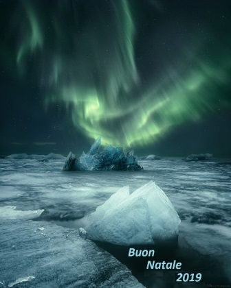
La Colomba della Pace tenta di prendere il volo dalla sommità del Mondo
Quand'ero piccolissimo (appena poco più di un bimbo) mio padre mi portò a vedere l'ultima accensione dell'ultima " calcàra " della valle. Venivano detti nella mia zona "calcàre" i forni...
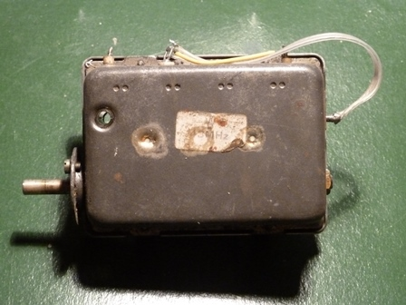
Cosa sarà mai questo strano oggetto qui sotto? Vuoi vederlo anche dentro? Eccolo: Che sia roba elettronica è chiaro, che sia roba molto vecchia anche, perchè oggi con tutto questo...
Allora andiamo avanti con il nostro "Autan"? Fatto il toluilcloruro ? Siamo belli calmi e sicuri? Allora possiamo partire per la seconda parte della sintesi, che tanto per cambiare... è...
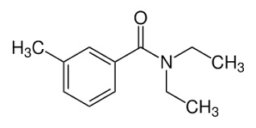
Tutti ci siamo spalmati sulla pelle almeno una volta, chi più chi meno, la dietiltoluamide dell'Autan, simbolo commerciale di un famoso repellente per insetti. Ora questa sostanza è stata...
Lo sconsolato post di oggi è purtroppo un altrettanto sconsolato aggiornamento al post n. 350 Anni fa andai a visitare quello che avevo sempre considerato il più bello dei musei...
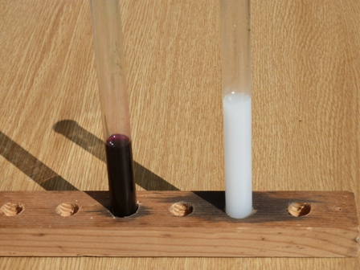
Che domanda! Ovvio che lo contengono, lo sanno anche i bimbi. E allora perchè questo titolo abbastanza stupidino? Perchè nonostante la semplicità del caso non avevo mai effettuato il...
Lungo una strada montana dei miei posti è oggi tutto un fiorire di primule gialle ; se fossero usignoli l'ambiente rimbomberebbe di inni alla primavera. Il loro inno monocromatico lo...
C'è nella profonda Milano nord, alla Comasina, una anonima (nel senso di poco conosciuta) via intitolata a Gerolamo Forni , farmacista milanese del XIX-esimo secolo. Chi era questo ignoto...
Mi diceva ieri la Ŝiura Gina : -Sai che mi salta il ticchio di fare un esperimento?- -Ti dai agli esperimenti, Gina? Che esperimento?- dico io . -Domani non fò nulla, sto stravaccata sul...
Stavolta non voglio dire di qualche esotico metallo che arriva tutto (o quasi) da quell'unica miniera situata, di regola, nel posto più scomodo al mondo che uno possa immaginare. C'è una...
C'è un'interessante faccenda di cui voglio dire, che non conoscevo e che è molto articolata; la pongo per punti per semplificare più che posso. A - Ho detto problemi lontani... infatti la...
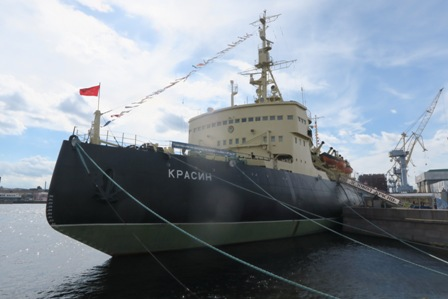
La prima volta che son capitato da quelle parti, la città si chiamava Leningrado ed il Krassin stava ancora cercando gas e petrolio nei mari artici e perciò mi sfuggì. La volta successiva...
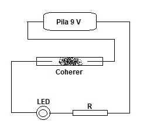
Basta cercare in rete la parola coherer e si trova tutto quello che si vuole su questo misterioso dispositivo elettronico. I due aggettivi sono importanti per quello che voglio dire: sia...
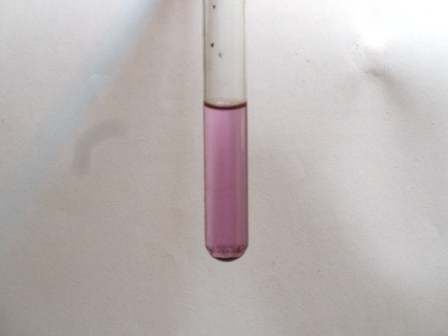
Riprendendo dalla volta scorsa... " -quella mia polveraccia scura avrà la bella forza di ossidare il Mn 2+ a MnO 4 - ? "- La reazione sulla quale si basa questo vecchio sistema analitico...
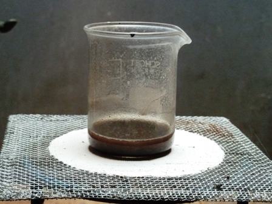
Nel precedente articolo sullo xeroformio ( tribromofenato di bismuto ), accennavo al futuro tentativo di preparare una minima quantità di quell'interessante composto analitico, o meglio ex...
Ahi, ahi, povero blog , ti ho semiabbandonato! Più di un mese senza un post, mi sa che se continua così vai a finir male. Ma arrivo, arrivo, il magnete nordico mi ha rilasciato da un bel...
Sono come l'ago della bussola: il magnete mi attira. Anche quest'anno me ne vado un po' nel profondo Nord. Non profondo come vorrei ma quanto basta.
Sono andato qualche tempo fa, per curiosità, a vedere quel colossale mercatino dell'antiquariato che si svolge l'ultima domenica del mese a Piazzola sul Brenta . Si tratta certamente del...
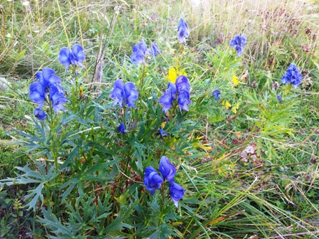
L' Aconitum napellus non è certo una pianticella comune, ma ha una interessante particolarità: è la più velenosa della nostra flora. Percorrendo un sentiero situato vagamente non lontano...
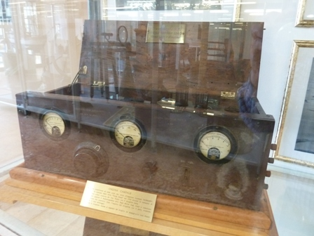
Ma cosa sono l' Ondina e Coltano ? Riguarderà roba vecchia di sicuro, dirà qualcuno che capita non per la prima volta su questo blog. Sì, roba vecchia, roba di storia. Nei post n. 246/7/8...
Vedendo la mia centrifughina autocostruita mi è venuta nostalgia di quei bei problemi di fisica che si facevano una volta. (Spero proprio che non abbiano fatto la fine di storia e...
Finalmente la lunga lezione in cinque puntate del Prof. Catullo è finita e possiamo tornare a noi. In ogni caso abbiamo imparato in dettaglio (o almeno l'ho fatto io) quanto fosse...
Capitolo di metallurgia, tratto da un manoscritto sulle miniere della Provincia Bellunese… (Parte quinta e ultima– Ved. Post precedente ) Par. VI – Terza fondita I kretz staccati dalla...
Capitolo di metallurgia, tratto da un manoscritto sulle miniere della Provincia Bellunese… (Parte quarta/5 – Ved. Post precedente ) Par. V – Torrefazione Gli stoni rifusi si recano nei...
Capitolo di metallurgia, tratto da un manoscritto sulle miniere della Provincia Bellunese… (Parte terza/5 – Ved. Post precedente ) Abbiamo veduto più sopra, che lo schisto è il fondente...
Capitolo di metallurgia, tratto da un manoscritto sulle miniere della Provincia Bellunese… (Parte seconda/5 - Ved. post precedente ) Torna qui in acconcio entrare in qualche disquisizione...
Capitolo di metallurgia, tratto da un manoscritto sulle miniere della Provincia Bellunese… Di Tommaso Antonio Catullo , Professore di Tecnologia e Storia Naturale nel Liceo di Verona...
L'amico Marco, sapendo che ho un debole per le vecchie miniere, mi ha mandato fra l'altro un piccolo campione di residui di fusione di quel minerale che si lavorava un tempo nel giacimento...
S CENA II - Al Caffè Pedrocchi di Padova A Padova intanto l'esimio Conte Carburi , naturalmente a conoscenza come tutto il mondo scientifico nazionale della faccenda di Molfetta, nutre...
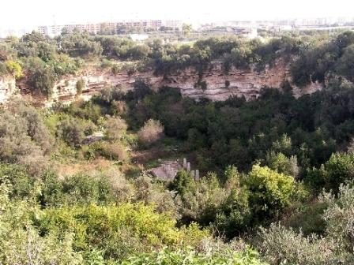
Ho seguito qualche tempo fa una piacevolissima conferenza storica avente per tema " Le nitriere artificiali secondo il Conte Gazzola ". Mi è rimasta, alla fine, la voglia di approfondire...
L'ho trovato non ricordo dove nella Grande Palude , gettando l'amo per chissà cosa. Anzichè la solita scarpa delle barzellette è venuto a galla questo singolare oggetto matematico. Non so...
Lasciamo che Biringuccio dalla Repubblica di Siena (1540) continui con il suo discorso sullo STAGNO : ...LA MINIERA sua anchor ehlo non la vedesse mai, perchè in pochi luochi pare che se...
Ho già avuto occasione di parlare in passato di Vannoccio Biringuccio e del suo celebre libro "De la pirotechnia" ( link ) Si trattava allora di alcune mie considerazioni circa il salnitro...
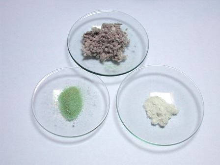
Non aspettatevi un granchè da questo post, nè tantomeno una cosa inedita; semplicemente è un esperimento talmente banale che l'ho sempre rimandato. Come quel vecchio che abitava a Roma e...
Harald Sohlberg, 1914 - Vinternatt i Rondane Nasjonalgalleriet, Oslo Rivedere anche con gli occhi di Harald Sohlberg questo medesimo orizzonte, suggestioni del 2017 . Buon Natale e buon...
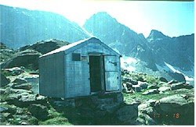
Continua dalla volta scorsa. Dopo l'illusione di aver alleggerito il sacco cercando di far fuori più panini possibile (Lavoisier insegna che il peso da portare sarebbe stato identico...)...
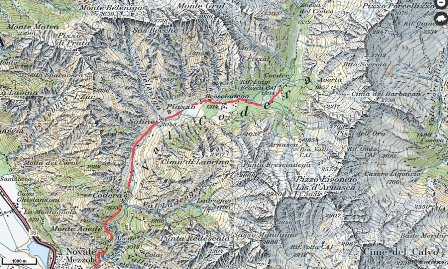
Eravamo venuti a sapere, io e il Danilo, giovani e studenti, che in alta Val Codera verso il Pizzo Trubinasca c'erano le pegmatiti . E in quelle pegmatiti sapevamo pure che con accettabile...
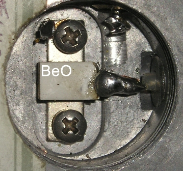
Qualcuno avrà notato che amo paragonare gli elementi ai componenti di una numerosa compagnia teatrale nella quale ogni elemento, come ogni attore, ha il suo carattere e la parte da...
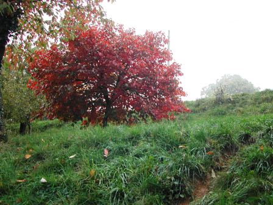
A pochi passi da casa c'è questo piccolo caco che quest'anno ha preso i colori dell'autunno come non mai. Guarda (oppure ancor meglio, IMMAGINA! ) che profusione di rossi . Meriterebbero...
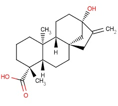
Mi piacciono le piante in generale, figuriamoci se non amo qualsiasi vegetale che mi produce, gratis per sintesi interna, una interessante sostanza chimica con la sua bella formulaccia!...
Chimica sperimentale , dove sei finita? Si sono ben rarefatti i personaggi che recitavano le commediole delle mie e altrui sintesi (e ne ridirò, per l'ennesima e ultima volta, il motivo)....
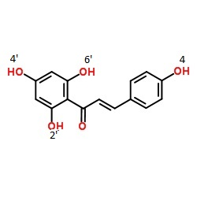
Chi legge non si aspetti un granchè di mistero: è un misterucolo da niente, ma dato che tutto è relativo può avere la sua importanza nel minicontesto di questo blog. Vi ricordate della...
Più che sfortunata la definirei ingenua e temeraria, ma quelli erano i tempi e gli uomini e del resto tutte le prime grandi conquiste geografiche sono state assolutamente temerarie. Sto...
" Mancò la fortuna, non il valore ", si dice per El Alamein. Parafrasando molto liberamente, il mio piccolo El Alamein è quella chiesetta di Re Oscar ... per la quale non mi mancò la...
Mando il mio blog in vacanza per un bel po' di tempo , per un buonissimo motivo! Vedete questa chiesetta che sembra niente? E' dedicata al re Oscar II . Il problema è che si trova in uno...
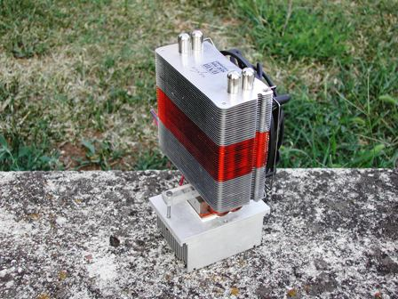
Ho visto qualche giorno fa in un mercatino dell'usato a prezzo irrisorio uno di quei radiatoroni da computer muniti di ventola per quei patiti della supervelocità o dei supergiga che più...
Mi è sempre piaciuto l' acido formico , per quel suo nome dal sapore alchimistico, che te lo fa immaginare come quintessenza di milioni di formiche distillate da un athanor. E infatti ne...
. .e adesso assaggerete la Feniltiocarbammide e poi mi saprete dire...- -Bella questa! Ma dove son capitato? Sogno o son desto? Mi propongono niente popò di meno di assaggiare una robaccia...
Mi scrive Sabrina , in uno di quei messaggi ai quali io ingenuamente sempre rispondo, ma che raramente hanno un controesito: - Basta con le sostanze chimiche !!! Abbiamo...trasformato...
E' il momento di mettere alla prova l' esanitrodifenilammina preparata per la ricerca microchimica del potassio; si tratta di un buon vecchio metodo storico e quindi, dal mio punto di...
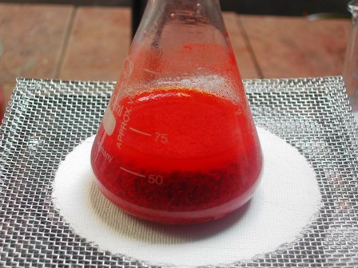
Prima del test per il potassio con la dipicrilammina , ho voluto vedere, per pura curiosità, il bel sale insolubile di questo metallo alcalino. Ho sciolto pertanto un grammo di DPA con Na...
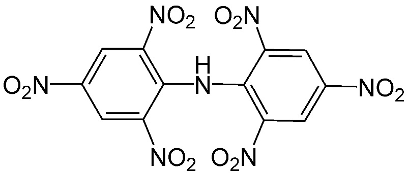
Ecco l'ultimo prodotto della serie, la 2,2',4,4',6,6'-esanitrodifenilammina ovvero dipicrilammina , col suo bel nome storico come piace a me. Un gruppo fenile con tre bei gruppi nitrici...
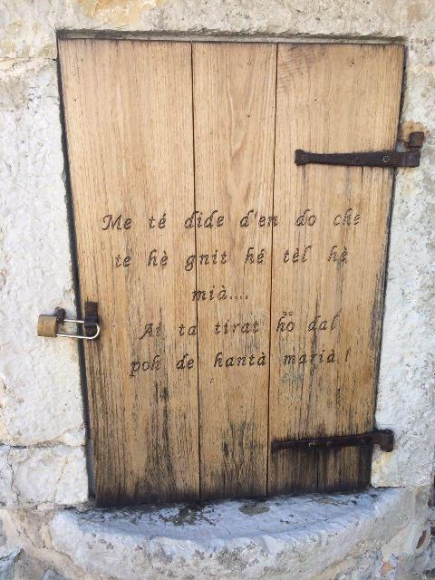
Per gli appassionati di linguistica (ma chi mai capiterà qui? Probabilità uguale a lim 1/x per x che tende a infinito ...) ecco un bell'esempio di linguaggio locale. Lo lascio come quiz ....
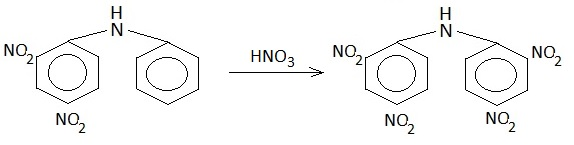
Ed eccoci al successivo intermedio della serie in programma, che è partita dal clorobenzene per arrivare a... Oggi verranno attaccati (mi si perdoni il linguaggio volutamente ruspante)...
L'undici aprile 2017 ricorrerà il trentesimo anniversario della morte di Primo Levi , chimico sperimentale, letterato e storico (tutti e tre al medesimo livello) del quale io ho infinita...
Qualche tempo fa, parlando dell' acido borico (post n. 365) dicevo alla fine che avrei sperimentato un inconsueto metodo di ricerca analitica di quest'acido, ma che l'avrei potuto fare...
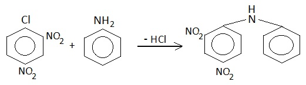
Tempo fa, nel post n. 245, avevo preparato una quantità maggiore del solito (ca. 30 g) di 2,4-dinitroclorobenzene perchè avevo già allora l'idea di utilizzarlo come futuro intermedio... di...
Una volta i famosi Intervalli TV erano costituiti da pecorelle al pascolo e i sottofondi sonori più trasgressivi erano a base di arpa... pling...plong...pling... una nota ogni quarto...
Ahi, ahi, che titolo pretenzioso per una ciambellina senza buco! Come si sa, ogni tanto piazzo qui anche le ciambelle mal riuscite e questo è uno di quei casi, fortunatamente non troppo...
Mi ero fatto fare da un artigiano ceramista, tempo fa, un bel bicchierino di materiale poroso da usare in esperienze di elettrochimica. Un setto poroso è in pratica un separatore che...
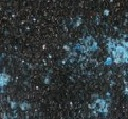
In Inorganic Syntheses mi sono imbattuto nella preparazione di un sale che avevo già provato a fare qualche anno fa, basandomi su un'altra fonte e con esiti allora abbastanza infelici. La...
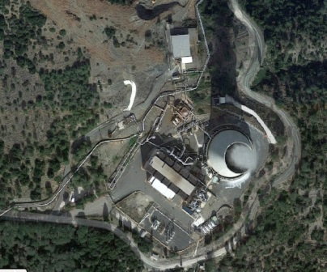
Passando dalla zona delle Colline Metallifere toscane, dopo San Galgano ed il suo ferro trovato per caso (post n. 361), ho voluto vedere l'originale acido borico di Larderello. Si entra...
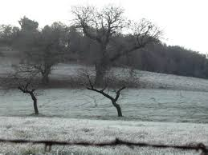
Oggi è il solstizio d'inverno , il sole splende e da domani splenderà un pelino più a lungo! Magnifica notizia! Ci sono invece, nella foto di questa imprecisata giornata di dicembre, s...
Ovvero la NON-piramide magica che suona un concerto mirabile di corrispondenze numeriche, cosmiche ed esoteriche. Finora sembra tutto criptico, ma vedrete che è più semplice di quanto può...
Ogni anno ha le sue ricorrenze, anche più di una. Oltre alle ricorrenze serie, sulle quali sorvolo, c'è l' A nno della scimmia, l' A nno della resurrezione neroazzurra, l' A nno della...
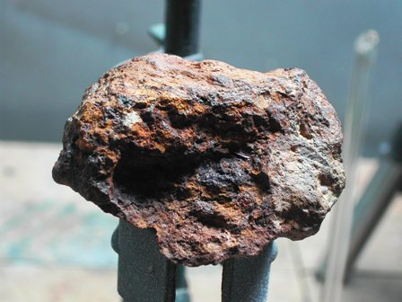
Qualche giorno fa, in una anomala giornata di fine ottobre quasi estiva, camminando lungo il sentierino che dall' abbazia di San Galgano conduce a Montesiepi mi è capitato casualmente di...
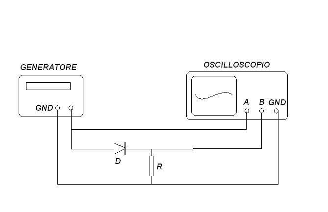
Quale tempo migliore di una uggiosa e piovosa giornata di ottobre per fare un test sperimentale sulle proprietà semiconduttrici del solfuro di piombo cristallizzato, cioè della galena ?...
Più di un mese senza un post... mai successo! Ahi, ahi, ahi, che sia l'inizio della fine? Tutto ha un inizio, una maturità, una fine, non si scappa. Questo banale discorso mi fa sempre...
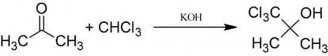
La complessità delle molecole chimico-farmaceutiche moderne spesso, anche se non sempre, è molto elevata; ci sono infatti molecole bellissime e strane, frutto di una ricerca costosa (ma...
In questa sede per " chimici sperimentali " intendo coloro che sporcano provette per hobby... diciamo più o meno come il sottoscritto. Qualche anno fa, in tempi molto più favorevoli, ebbi...
L' acido tannico del commercio si presenta come una polverina amorfa di colore ocra, inodora e di sapore astringente. La formula è complessa, trattandosi per lo più di una combinazione di...
Nel 2004, giacente su un lato della chiesa di Santa Maria Antica alle Arche scaligere di Verona , fu aperto il sarcofago di Cangrande della Scala e riesumato il corpo di quello che fu il...
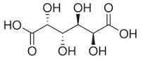
Finalmente riesco a (ri)sporcare un po' di provette! Ne avevo nostalgia. Ho scelto una sintesina facile fra quelle che mi ero segnato come "da fare"; in realtà avevo già fatto questo...
Sì, missione compiuta, siamo riusciti a camminare sui Christo's Floating Piers! Sembrava facile, ma non lo fu. Accedere ad un'opera tecnicamente monumentale come questa, che dura solo un...
Aspettando l'occasione di tornare a sporcare un po' di provette (prima o poi l'occasione arriverà, un po' di fiducia...) girovagando in rete in chi m'imbatto? In Sambuugiin Pürevjav ! E...
Ma dov'è andata a finire la chimica sperimentale di questo blog? Più niente da fare? Basta provette da sporcare? Spero di no, spero proprio di no! Dopo la soddisfazione (piccola, ma pur...
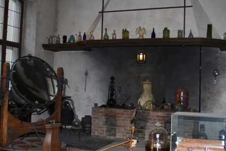
Se amate la scienza e soprattutto la tecnologia come le amo io, allora DOVRESTE andare, almeno una volta nella vita, a girovagare per i corridoi del Deutches Museum di Monaco. Io l'ho...
Qualche giorno fa sono andato in un negozio specializzato in ricambi domestici per cercare i manici di una pentola. La pentola è di una notissima marca ed i manici li ho trovati, quindi...
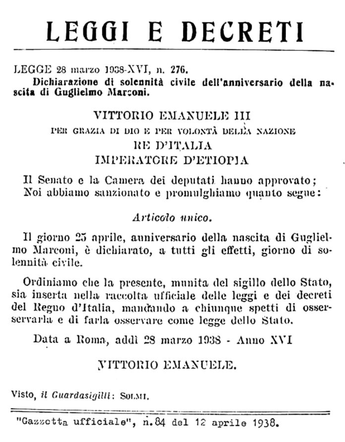
Oggi, 25 aprile, ricorre anche un altro anniversario: quello della nascita di Guglielmo Marconi . Scienziato , inventore , imprenditore (tutti e tre gli aggettivi li metto a pari merito),...
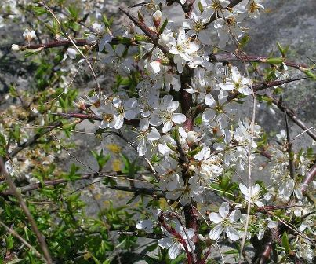
Qualche giorno fa sono passato lungo la strada (pochissimo frequentata) che della valle conduce al monte ed a fianco del solito tornante ho trovato in pieno fiore il prugnolo selvatico che...
[Intermezzo fino al prossimo esperimento] - Silvana, hai presente l'inquinamento elettromagnetico? - Certo Teresa, è una di quelle cose che ti fanno venire il cancro! - Ma tu ci stai alla...
Eugenio Bertorelle , classe 1913, fu tre cose insieme: un chimico, un professore ed un artista. Insegnò in vari istituti tecnici ed all'università di Milano, ed ebbe sempre la passione...
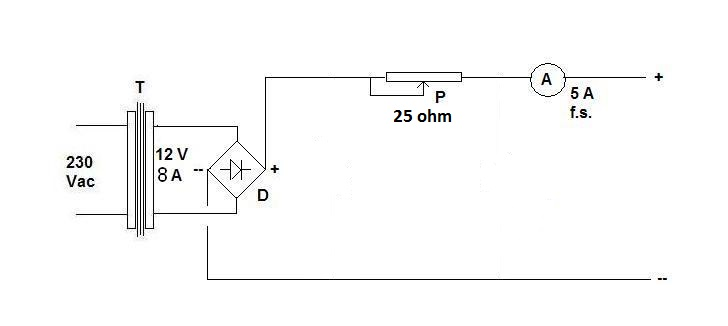
[ Galvanotecnica è intesa come il modo di ricoprire elettroliticamente un metallo con un altro] Qualche tempo fa chiacchieravo con un giovane amico di galvanotecnica spicciola, e spero di...
C'è una sperduta ma interessante località presso il lago Bernic , nel Manitoba (Canada). Quando penso ad una sperduta località del Canada sempre associo l'idea ad un amico (che ora...
Ancora un quadro? Ma non siamo in Chimica sperimentale? Sì, ma la "chimica sperimentale" langue di questi tempi, non solo su questo blog ... e poi i quadri mi piacciono particolarmente. Se...
Ogni tanto mi prendo qualche pausa. Chi passasse nel frattempo da queste parti può ascoltare questo delizioso brano tradizionale dell' Ingria . Non piace? Poco male, c'è sempre il Festival...
Tutti noi sappiamo che " LA CHIMICA " è vista da una generica signora Adele (e dai giornalisti del TG) più o meno come il fumo negli occhi e le bollette del gas. Insomma, una dannata cosa...
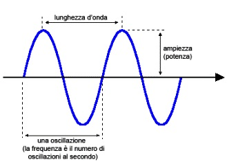
Una ventina di anni fa i televisori a schermo piatto erano da poco apparsi, poco diffusi e molto costosi, una specie di sogno futuristico più o meno come si vede nel film Farenheit 451 del...
La grande città è ai bordi di quell'isola, giù sotto, sul fondale. Non è Atlantide , non è acqua, è la nebbia del dicembre 2015. Laggiù all'orizzonte, nemmeno gli Apennini spuntano....
Շնորհավոր Սուրբ Ծնունդ Buon Natale , in armeno. Travagliata, antica terra cristiana. Che la luce, là in fondo, sia con tutti noi .
A Monet piacevano le ninfee, sicuro. E gli piaceva pure il color violetto , che troviamo sempre, naturalmente ora più ora meno, nel suo coinvolgente impressionismo che da solo vale il...
" Similia similibus solvuntur !" Questa bellissima frase, anzi questo bellissimo concetto, me lo fece imparare fin da giovane l'esimio professor Zampieri, mio insegnante di chimica...
Gino e Aldo si trovano per caso in Slovenia dalle parti di Kobarid ( Caporetto ) e chiacchierano del 1917. Aldo : -Mannaggia al piombo e allo zinco , per un pelo questi due metalli ci...
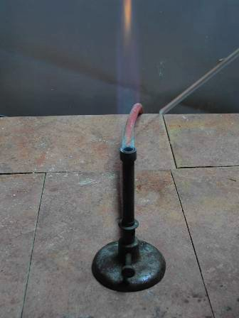
A proposito di litio , scommetto che tanti giovani studenti con qualche pallino per la chimica hanno visto il colore alla fiamma di questo metallo solo nelle immagini di Google. Tempo fa,...
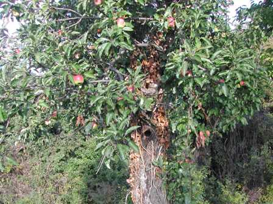
Ai margini del bosco, a due passi da casa, c'è questo vecchissimo melo semiselvatico, che fa delle piccole mele verdi e rosse di quelle qualità antiche ormai quasi scomparse. Mai sarebbero...
Fame commerciale intendo... quante apparecchiature ci sono oggi nel mondo alimentate con una batteria al litio ? Possiamo dire infinite? Ecco che questo simpaticissimo metallo alcalino,...
Conosco una persona che odia le code, e le fa praticamente solo negli Uffici dello Stato, dove in nessun modo le può evitare. Attenzione che a parole tutti dicono di odiare le code, ma in...
Ne ho visti di tramonti in montagna, di tutti i tipi direi. Ma questo, del quale la fotografia non è che una flebile testimone, è stato veramente eccezionale; cose che capitano una volta e...
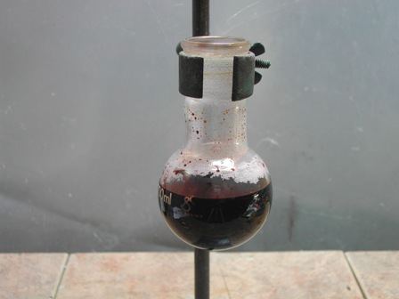
Ciò che vado a descrivere è una via di mezzo tra una vera sintesi, con la sua bella procedura particolareggiata, e un "esperimento", giocato con modalità più semplificate. L'ho fatto...
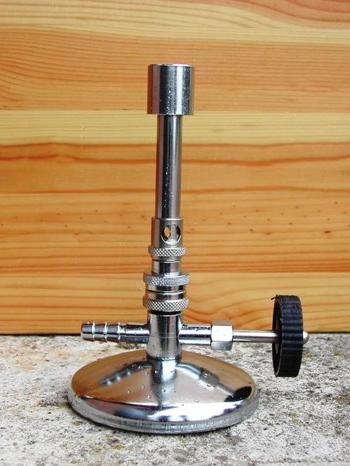
Visto che bel becco ... Bunsen ? Non mi ricordavo quasi più di averlo e l'ho ritrovato intatto e perfettamente conservato facendo un pò di ordine in qualche vecchia scatola. L'avevo...
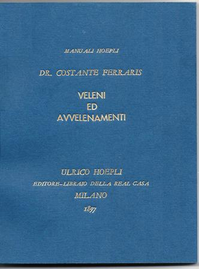
"I tempi sono cambiati... ma il libro rimane pregevole ed interessante..." Così scriveva ormai un bel po' di anni fa lo stimatissimo magistrato bolzanino Edoardo Mori presentando sul suo...
Era da qualche anno che mi ero segnata come "da fare" la sintesi dell' acido citrazinico , questo bell'eterociclico che si vede qui accanto. Qualche giorno fa ho dedicato una buona...
C'è stato un periodo a cavallo tra gli anni quaranta e cinquanta dello scorso secolo in cui impazzavano certi ingenuissimi film di fantascienza con razzi a forma di supposta e dischi...
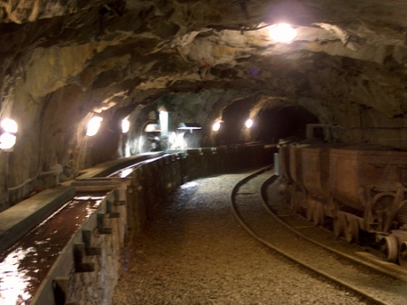
Contro l'afa che si taglia con un coltello e i trentacinque gradi delle pianure, ho avuto la fortuna di gustare per un po' il fresco degli otto (!) gradi e l'aria salutare della vecchia...
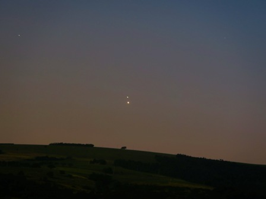
Circa una settimana dopo, 30 giugno, sempre alla stessa ora: occhi al cielo. La Luna , discreta e fuori campo verso sud, se ne sta anche lei a guardare la congiunzione tra Zeus e Afrodite...
Avete visto che meraviglioso triangolo appare tutte le sere in questo periodo? Basta alzare gli occhi verso Ovest, da dopo il tramonto fin verso le 23. La foto, qui per forza maggiore fin...
- Guarda questo quadro... io ci vedo il CW nella sua massima espressione! Tu cosa ci vedi? - Sei impazzito di colpo? Che c'entra questo capitello diroccato con... cosa hai detto? Che...
Tutti quelli che hanno a che fare con la chimica sanno che nell'etere possono formarsi delle sostanze che godono di un aggettivo magico: " esplosivo !". Perchè questo aggettivo sia magico...
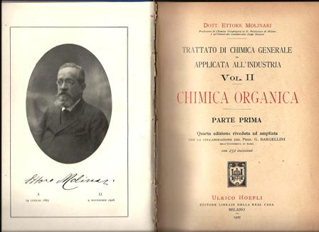
I miei " Molinari " sono rispettivamente del 1918 (Inorganica) e del 1927 (Organica). Mi capita non di rado di sfogliare queste vecchie pagine ingiallite e per chi ama la chimica (storica)...
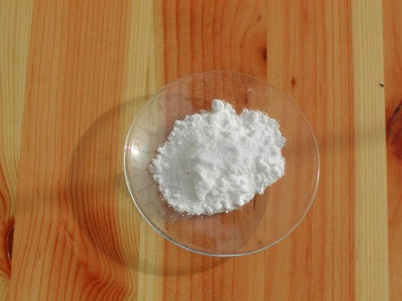
Il tenente Giovanni Drogo aspettò i Tartari invano. Per tutta la vita li aspettò. ---°°°OOO°°°--- Stavolta non c'entrano i Tartari del capolavoro del Grande Bellunese ma i tartari della...
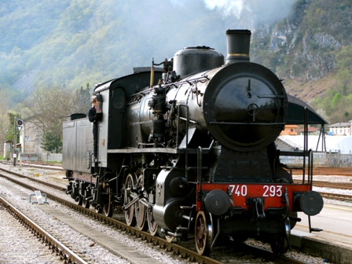
La 740 è una famosa locomotiva, costruita nel periodo a cavallo della prima Guerra Mondiale, anni prima, anni dopo. L'esemplare che domenica 12 aprile ci ha fumosamente portato dalla piana...
Ogni tanto viene il turno di qualcosina di elettronico ed è quello che capita oggi. Questo post serve soprattutto a me, per ricordarmi un cablaggio particolare; se dovessi perdere degli...
Cara e gentile Rina Di pace e di generosità è stata tutta la tua vita Ora per sempre riposa in pace
Prendo spunto dalla recente capatina che l'amico Marco ha fatto al piccolo museo della Grande Guerra di Tambre. La Grande Guerra ... e non poteva essere altrimenti, in una zona che ne fu...
Alcune delle (tante) cose che mi piacciono sono la letteratura, l'arte e il mondo del periodo romantico inglese. Mi piace figurarmi l'atmosfera gotica dei fanali a gas di una Londra...
Bertoldo e i suoi amici discutono sull'esistenza di una quintessenza dell'ignoranza. Roba da filosofi. -Altrocchè se esiste, dice Bertoldo ! Eccone una di quelle giuste:- Il fatto è che...
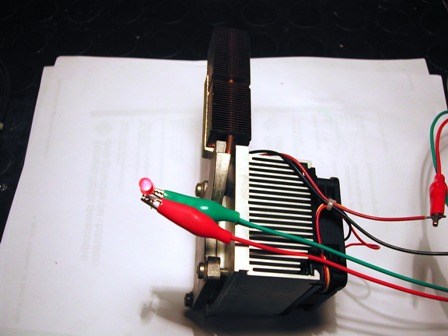
Se c'è una persona che ti sta antipatica... puoi star certo che anche tu lo sarai per lei! Poco ma sicuro! Questo è uno dei risvolti del Principio di reciprocità , che vale in tantissimi...
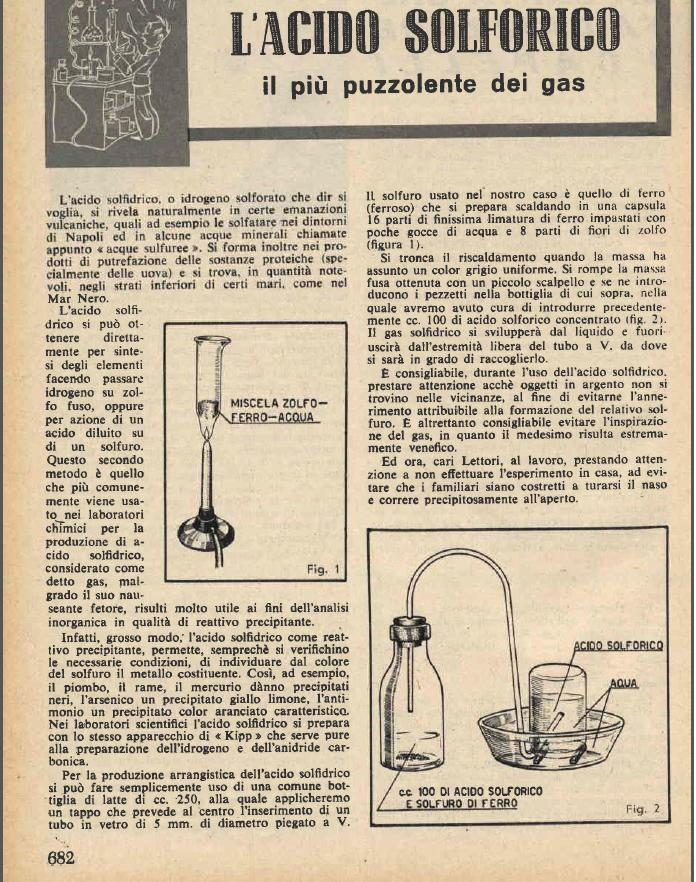
Sistema Pratico , Sistema "@" , Fare , La Tecnica illustrata ... sono alcune di quelle riviste di divulgazione tecnica di allora che se uno le ha lette da bambino mai più le dimentica. Le...
Francis Jessop , John Ray , Andreas Sigismund Marggraf ... cos'hanno in comune questi tre Carneade? Hanno in comune il primo acido organico, quello con solo un idrogeno attaccato al...
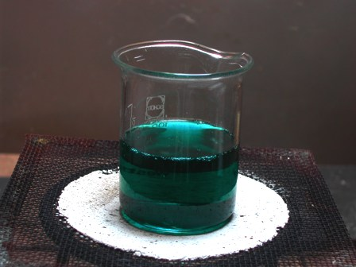
Nel mio Test di ramatura elettrolitica del ferro, concludevo che avrei provato un altro tipo di ramatura, utilizzante un sale inedito, e lo spunto per questo esperimento me lo dava ancora...
Avete avuto occasione di dare un'occhiata alla biografia di Michael Faraday ? Grand'uomo! Una delle pietre miliari della chimica e fisica sperimentali. Faraday ebbe anche il merito (fra i...
In lab fa un freddo cane, come tutti gli inverni, ma qualcosa di vagamente chimico bisogna pur fare ogni tanto, altrimenti sembra un lab abbandonato! Chiaro che le sintesi sono OFF,...
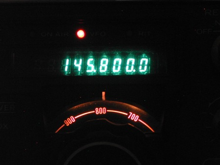
Dopo la strenna di Natale, cioè l'avvistamento ad occhio nudo della stazione spaziale ISS di cui ho accennato l'altra volta, oggi altro piccolo regalino da parte della nostra eccezionale...
A fra poco...
L'ultima bellissima quercia che ho visto "invischiata" come un addobbo natalizio (simile all'albero qui sotto raffigurato) l'ho trovata tanti anni fa nella foresta a nord ovest del...
... e grazie dell'ultima bella visibilità del 2014 . Oggi, giorno di Natale , ti ho vista benissimo a -3.2 di magnitudine! Non è che ti ho prorio vista di persona, cara Samantha...
Che si realizzi un Natale sublime come questo capolavoro della natura.
Salnitro nuovo e salnitro vecchio... ho parlato anche troppo di salnitro e quindi voglio concludere questa saga che sta andando troppo per le lunghe. Mettiamo dunque che il discorso...
Il tredici dicembre è la festa di Santa Lucia nella mia città. Vogliamo sforzarci un tantino, e far finta di non vedere tutto ciò che di commerciale gira attorno ormai a tutte le...
" The Chemist ", di Charles Moeller , dipinto nel 1875. Non è facile trovare la chimica nell'arte! Metto questo quadro perchè si situa proprio in quel periodo di transizione di fine secolo...
Ecco sentita un'altra bella proposta che arriva da quel posto là. Il canone per la televisione di stato (pubblicità martellante, centinaia di milioni di euro di passivo) verrà fatto pagare...
Dopo il prologo a Biringuccio , le tre puntate sulla produzione cinquecentesca del salnitro (che nei tre secoli successivi non varierà sostanzialmente) con la relativa conclusione, voglio...
...DELLA NATURA DEL SALNITRO ET DEL MODO CHE A FARLO SI PROCEDE Hor questo levato con uno scarpello dalle sponde del vaso dove congelato e nelle sue medesime acque lavato sopra a tavole si...
...DELLA NATURA DEL SALNITRO ET DEL MODO CHE A FARLO SI PROCEDE Et appresso a quello per la metà minore n'havete a fare un altro che sia due parti di calcina viva e tre cenere di cerro,...
DELLA NATURA DEL SALNITRO ET DEL MODO CHE A FARLO SI PROCEDE Il salnitro come alli luochi de sali si disse un composto di più sustanzie estratto con fuoco e acqua di terre aride e...
Parlavo qualche tempo fa del sal di muro , ovvero di quel "" salnitro "" (le doppie virgolette sono d'obbligo) che riveste talvolta i muri umidi e che salnitro proprio non è (nel mio caso...
Ogni volta che apro questo blog, per scriverci o così per fare un giro, è pacifico che mi scappi l'occhio su quelle figurine che stanno a destra, sotto la scritta " Ultime visite al blog...
Un volonteroso giovane sperimentatore mi ha chiesto qualche consiglio riguardo la sintesi del formiato di isopropile . Le sintesi degli esteri secondo Fischer sono un'ottima palestra per...
Ecco una sintesi facile facile e anche didattica: l'ossidazione diretta degli alcoli ad acidi ad opera del permanganato . Lo scopo di questa esperienza era ottenere un po' di acido...
Povero Nikola Tesla , ti hanno demolito la tua Wardencliffe Tower e non sapevano che ti saresti preso una bella la rivincita... Quanti fedeli seguaci ed ammiratori (è proprio il caso di...
Non è possibile nitrare direttamente l' anilina perchè quest'ultima è troppo sensibile all'ossidazione e l'azione dell'acido nitrico porterebbe solo a prodotti indesiderati (quegli odiosi...
Ogni tanto mi metto a risporcare qualche provetta, per non diradare troppo la parte sperimentale di questo blog. Perchè potete immaginare quanto COSTEREBBE tenere aggiornato l'archivio...
Lessi qualche anno fa un bellissimo saggio sull'antica "coltivazione" del salnitro ( nitrato di potassio , KNO 3 ), il componente essenziale per la fabbricazione della vecchia polvere nera...
I temporali praticamente quotidiani di questo mezzo luglio 2014 mi hanno fatto venire in mente i razzi dell'Anselmo . Sentite questa storia, che è ancora più incredibile di quella del...
Stavolta di chimica non c'è niente di niente, l'argomento è solo radioricezione; il breve testo che segue è, diciamo così, dedicato a qualche appassionato che per puro caso passasse da...
Ho vicino a casa ancora qualche ciliegio di quelle antiche qualità che mio nonno piantò molti decenni fa; purtroppo molte piante non sono sopravvissute alla terribile estate del 2003 ,...
Non mi era mai capitato di vedere in tale quantità questo materiale aderente come una spessa crosta metallica su un pezzo di carburo di calcio , ma solo come piccole inclusioni. Il CaC 2...
C'è stato un periodo nel quale (nella mia zona) tante famiglie contadine avevano in casa una bella latta piena di pezzi di carburo (di calcio, CaC 2 ), che si presenta più o meno come dei...
Mio padre da giovane (mentre io ero ancora nello spazio cosmico) rischiò quasi di ammazzarsi col carburo . Intendiamoci subito : niente a che vedere coi botti di Youtube, niente di niente...
Impellenti lavori chiamano... in questo periodo mi trovo a dover avere più dimestichezza con secchiate di malta e polvere di mattoni che con becher e gentili polverine chimiche! Blog, abbi...
Dopo il rilassante ambiente dell'isola del Minotauro, un po' di chimica. Esiste un interessante metodo per la determinazione qualitativa del selenio , che abbina alla estrema semplicità di...
Tramonto a Falasarna Sulla penisola di Gramvousa
L'analisi che segue non ha niente a che fare con le vere analisi quantitative, assai rigorose nell'esecuzione, ma è fatta senza pretese dato che non mi interessavano le finezze accademiche...
D'inverno succede che di pratico faccio poco o niente perchè nella stagione appena passata il lab è semichiuso, là dentro fa freddo ed è noto che le sintesi vengono male se fatte con la...
Dopo un po' che ci giocherello, il microcontrollore Arduino comincia a dare i primi frutti. Intanto ho capito quegli accidenti di punti e virgole e parentesi graffe del linguaggio C che...
Tutti avranno visto, dal vero o in immagine, quelle belle antenne "della bisnonna" costituite da una struttura in legno più o meno elaborata a forma di rombo o di quadrato con avvolte alla...
Nella suddivisione dello spettro delle radioonde, una frequenza tra 300 e 30 KHz è definita LF ( L ow F requency ) mentre una tra 30 e 3 KHz VLF ( V ery L ow F requency ). Le lunghezze...
Ogni tanto (un paio di volte all'anno) apro a caso il libro di Felice Ambrosioni (1823) e me ne rileggo qualche pagina. Oggi è venuta quella sull' Arsenico ... Volete sentirla? E' qui...
La volta scorsa in chiusura di post avevo accennato ai fiammiferi che Jean Chancel inventò allo sbocciare del diciannovesimo secolo. Sai che bello poter avere qualcosa che potesse produrre...
Ve lo sognate oggi, nel duemilaquattordici, un ragazzetto che entra in una drogheria (ma quale drogheria! non esistono più da decenni le "drogherie"!) e si fa pesare, come fosse la cosa...
Chi lo conoscerà bene, chi ne avrà sentito parlare senza saperne niente, chi si chiederà chi mai sia Arduino . Più corretto sarebbe è dire "cosa" sia Arduino , dal momento che non è una...
Credo che, a parte poche eccezioni (Svezia, Canada, ...) i metalli siano quasi tutti insanguinati, per un motivo o per l'altro. Più il metallo è prezioso e più si porta dietro un...
Sentite cosa mi scrive un giovane amico, che chiamerò F. "Ciao PA, sono seriamente preoccupato per l'Italia, ma davvero mi sento senza armi, cosa possiamo fare? Caro PA mi sono laureato in...
Basta cercare con San Google la frase " E-cat in vendita " e appaiono articoli sull'energia rivoluzionaria modello Andrea Rossi . Basta aver dinero e ti porti a casa un reattorone da un...
Avevo visto alcuni anni fa, in occasione di un cine-festival della montagna, un bellissimo film documentario sulla miniera di Potosì , in Bolivia. Un film che mi è rimasto cementato nella...
Ma guarda cosa vado a ritrovare a Barumini ! Barumini è un paesello della Sardegna, bello e accogliente come è tutta quella meravigliosa isola, e vi si trova il Museo di Casa Zapata , di...
B u o n N a t a l e e b u o n e f e s t e a t u t t i !
I pochi che seguono questo blog con una certa continuità ricorderanno che tempo fa avevo nitrato il clorobenzene per ottenere il 2,4-dinitroclorobenzene . La sintesi l'avevo fatta per i...
E cosa sarà mai 'sto CQ WW ? CQ è una importantissima rivista americana di radioelettronica e WW è l'acronimo di World Wide. No, oggi non sporco provette, oggi parlo di radio. Ogni tanto...
" Alchimie nell'arte " è il titolo di un bellissimo saggio in un volumetto di 235 pagine del prof. Adriano Zecchina che si legge tutto d'un fiato e non lo si vorrebbe finire così presto....
E' venuto il momento di mettere alla prova quell'insolito indicatore che possiamo ricavare dalle bacche del ligustro , di cui parlavo nel post precedente. Purtroppo non sono riuscito in...
Ecco svelato molto più presto del previsto il piccolo quiz del post precedente: l'amico Marco (non M.Capponi, un altro omonimo Marco) mi ha subitamente spiattellato la soluzione. Sapevo...
Per chi abita in una campagna montana, la natura è prodiga di sorprese quando le si vogliono cogliere. Mi trovo vicino a casa, ai limiti del bosco, due pianticelle arbustive di cui non...
Io so cosa c'è dietro quel piccolo noce, ma diventa fantasia. Non è meravigliosa questa atmosfera d'autunno? C'è una stagione che non sia meravigliosa?
Ho vicino a casa, chissà perchè, un bell'assortimento di pianticelle di Chelidonia . Se c'è in giro un vecchio muro lei se ne sta là vicino. La Chelidonia mi accompagna fedele da anni nel...
Sì, anche le valvole (quelle elettroniche intendo) muoiono, e ci sono per loro tre modi di morire, due traumatici e uno per consunzione. (A dir il vero c'è stato anche un quarto modo, ed...
Ora che la meravigliosa estate che citavo nel post n.240 è finita, ne rimangono... i frutti. La bella pianta di Datura metel del 240 ha prima trasformato i fiori in piccole palline...
Dicevamo dunque: PERCHE' I NAUFRAGHI SENTIVANO BENISSIMO LA NAVE, E LA NAVE NON SENTIVA LORO ? (La nave era la "Città di Milano" ancorata alla Baia del Re alle Svalbard ed i naufraghi si...
Analisi di un salvataggio: qualche considerazione sui motivi per i quali, nonostante tutto, la tragedia non fu totale . La spedizione in dirigibile del generale Umberto Nobile al Polo...
E' necessario un piccolo prologo. Il discorso che segue nasce dalla mia insopprimibile passione per tutto ciò che è viaggio, scoperta, esplorazione... insomma per la GEOGRAFIA nel senso...
Per far fede (fin quando sarà possibile...?) al titolo di questo blog ed in previsione di una futura altra sintesi (probabilmente sarà la 2-4-dinitrofenilidrazina ), ho preparato il...
C'era una volta... in Italia una buonissima azienda. Anzi, ce n'erano un'infinità di buonissime aziende, di quelle che oggi non sopravviverebbero alla globalizzazioe (e soprattutto alla...
Dal risonatore al magnetron: il passo non è breve ma fattibile... vediamo come. Ritorniamo alla fig.1 e supponiamo che gli otto risonatori (i fori assimilabili a piccoli circuiti L-C)...
In un giorno del 1945, l’ingegnere statunitense Percy Spencer ripose in tasca un cioccolatino offertogli da un suo assistente, ripromettendosi di mangiarlo più tardi. Di lì a poco, mentre...
Nell'intervallo appena concluso avevo indirettamente accennato a qualche alcaloide guardando una delle loro piante generatrici, dal momento che l'origine di elezione di queste...
Agli esordi di questo blog avevo presentato una bella pianticella di Datura stramonium ; era un periodo in cui questi tossici e interessanti vegetali si erano chissà come diffusi in un...
E siamo arrivati così al terzo e ultimo passaggio: partendo dalla benzaldeide si arriva al benzoino , dal benzoino al benzile e oggi dal benzile alla fenitoina , con l'unico scopo (chiaro...
-" Chissà con chi mi verrà in mente di "sposare" questo benzoino? E che "figli" genererà? "- Così avevo terminato la discussione sulla condensazione benzoinica il 20 aprile scorso. Ora è...
La Hexbeam (che tradotto solo per l'occasione suona più o meno come "antenna direttiva esagonale") è una bella e interessante antenna per onde corte inventata da Mike Traffie N1HXA (USA)...
Quando posso, mi piace fare qualche piccolo collegamento tra la mia chimica sperimentale e la storia di questa scienza. Anche l' etile-p-amminobenzoato , alias benzocaina , alias...
Perchè rose d'officina? Perche questa piccola casetta fa le veci di quella che io chiamo " l'officina ". In effetti contiene prevalentemente i miei attrezzi meccanici. (Ciò che riguarda la...
Quando si parla di gas, e per una fortuita combinazione viene associata la parola "regime" (qui intendo il nostro Ventennio) la mia fantasia visualizza immediatamente non una eterea...
Mi è sempre rimasta impressa fin da bambino (quando lessi il libro la prima volta) l'ingegnosità con la quale uno dei protagonisti del famosissimo romanzo " L'Isola misteriosa " riesce a...
Mi era capitata sotto mano una vecchia immagine, che avevo messo qui come breve intervallo tra un esperimento e l'altro. Tempo fa, durante una passeggiata in montagna ho fatto un incontro...
Il tema sui catalizzatori, lanciato dall'amico Marco sul suo blog per ospitare il prossimo 27esimo Carnevale della Chimica , mi ha invogliato a fare la sintesi che presento. La reazione (...
Val la pena ricordare anche qui Nikolai Zinin per qualche motivo. Innanzitutto perchè fu uno scienziato di grande talento (matematico, astronomo e soprattutto chimico), poi perchè non è un...
Primavera? Ma quale primavera! Se continua questo schifo di tempo che permane da mesi -lo voglio proprio documentare con questo aggettivo- ci siamo già mangiati la più bella stagione...
Mi sa che per trovare il Salofene in bottiglia oggi bisogna andare a Istanbul , o giù di lì. Infatti è lì che l'ho trovato qualche giorno fa. Naturalmente non sono andato nella vecchia...
Conservo gelosamente delle vecchissime riviste di mio padre degli anni '50, molto diffuse in quegli anni: Sistema Pratico , Sistema "a" , e tante altre che ho trovato e acquisito anch'io...
Riprendo il discorso sui minerali organici. Fra questi minerali vi è anche una inaspettata serie di idrocarburi , a vari atomi di carbonio e con vario tipo di legame. Ne ricordo solo...
La prendo alla larga: una delle mie sintesi utopiche è da tempo quella di preparare l ' acido mellitico o acido benzenesacarbossilico (ho ancora da qualche parte tutta la procedura); ma so...
Dicono che Van Googh non avrebbe mai potuto dipingere i suoi girasoli senza il Giallo di Cadmio . Ci credo senza difficoltà, tanto è bello e solare il colore di questo pigmento a base di...
Ogni tanto metto nell'armadio qualche "esperimento" e poi magari me ne dimentico; mi è capitato sottomano il file dell'esperienza che vado ora a descrivere e che a suo tempo aveva destato...
Lascio questo paleoresiduo di un post poco pertinente con lo stile del mio blog. Così rimangono anche i commenti. Il nero rimane come immagine di tutto ciò che io vedo come simboli della...
Risolto felicemente, come sembra, l'intermezzo dell'acido solforico "per campana", ritorno nel mio virtuale teatrino della commedia dell'arte (chimica) per vedere se i "liquori" hanno...
Voglio battere il ferro finchè è caldo. Chi ha seguito fin qui la faccenda della produzione storica dell' acido solforico , ha visto che ho voluto sottolineare con forza come non mi...
Già che siamo in tema strorico, che è inverno, che il lab è inagibile... prendo al volo la palla lanciata da Marco riguardo "l'olio vitriolico" (ved. commento al post precedente),...
Guardando i commenti al post precedente, la nota di Marco riguardo lo " Spirito di zolfo per campana " (analogo suggerimento mi è venuto anche dall'amico Simone ) mi ha fatto dare...
Qualche volta si sa che mi piace paragonare le sostanze che faccio interagire nel mio gioco chimico a degli attori che recitano una commedia. Infatti i reagenti io li vedo come dei...
Capita talvolta di giungere al risultato di un problema non per la via più diretta ma seguendo ragionamenti indiretti e magari macchinosi, che alla fine forniscono però il risultato...
Mi piace parlare di questo elemento anche perchè mi viene da associare il suo nome alla buon'anima di un vecchio montanaro che portava il nome di Tullio , da pronunciarsi rigorosamente con...
Alla fine del 2012 il transistor compie 65 anni. C'è qualcosa che ha cambiato la nostra vita, senza che ce ne accorgessimo, più di questo oggettino elettronico? Sfido a trovarne un...
... lo dice l'uccellino a tutti coloro che passano da queste parti!
Ognuno ha le sue preferenze, perfino per i personaggi del Teatro mendeleeviano... Mi piange il cuore a chiamarlo inutile, il Tulio ! Ma del resto chi lo conosce questo ignorato numero...
Quand'ero bambino sono sicuro che il giorno di Santa Lucia era il più bel giorno dell'anno. Ora, nel secolo successivo, non è più così per la maggior parte dei bimbi; se son troppo piccoli...
Già che siamo in tema di alcaloidi "antichi" e dopo aver chiacchierato un po' con la scorbutica coniina , perchè non ridare un attimo di gloria anche ad un'altra vecchia protagonista della...
Non di sole sintesi vive l'uomo... e così talvolta mi soffermo a commentare a modo mio qualche libro che leggo. Se poi quello in oggetto è un libro di "letteratura" (di qualunque genere si...
Qualche tempo fa avevo preparato il p-nitrobenzen-azo-1-naftolo , ovvero il Magneson II ; oggi è il momento di verificare con delle semplici prove se questa sostanza (non l'avevo mai usata...
Prima di mettere alla prova dell'acqua il p-nitrobenzen-azo-1-naftolo , ho dato un'occhiata ad uno di quegli impagabili libri degli anni '50 che ho la fortuna di possedere: la " Guida...
In chimica analitica (quella classica) mi è sempre piaciuto il connubio Inorganica-Organica, cioè l'uso di reagenti organici per la rilevazione di un catione o di un anione. Gli esempi...
In autunno o in inverno, forse perchè sono le stagioni che più odorano di spirito contemplativo, metto sempre qualche foto dell'ambiente che mi circonda. Ad un centinaio di metri dal mio...
Richard Feynman , uno dei più grandi studiosi della meccanica quantistica, scriveva nel 1965: "...un tempo i giornali affermavano che solo una dozzina di uomini al mondo erano in grado di...
Avete presente quel libro estremamente inquietante di Golding (premio Nobel 1983) che è " Il signore delle mosche "? La sua testa di maiale circondata da immondi insetti riproducentisi a...
"Si potrebbe recuperare anche questo prodotto [ acido fenilacetico ] , ma non ho proceduto in tal senso". Così avevo scritto nel post dedicato all' estere etilico dell'acido fenilacetico ,...
Ho presentato tempo addietro (post n. 182 e altri precedenti) un " C O L O R I M E T R O " home made, che permette interessanti ed istruttive esperienze con questo metodo di analisi....
Ho fatto questa sintesi per quattro buoni motivi: a- il fenilacetato di etile è un estere, e come si sa gli esteri mi sono tutti simpatici b- il prodotto è odoroso... alla grande, di bene...
La mononitrazione del benzene e dei suoi alogenoderivati è facile, tuttavia nel caso dei derivati monosostituiti si pone poi la necessità di separare gli isomeri prodotti. Nel caso del...
Mi accorgo che è tanto tempo che non propongo un' esterificazione di Fischer , sintesi che mi è simpatica oltre che per la sua semplicità soprattutto perchè porta spesso a prodotti...
Per continuare il discorso dell'altra volta, dovrei adesso parlare della propagazione delle radioonde . Naturalmente mi guarderò bene dal farlo, rimandando alle trattazioni che si possono...
Quest'estate ho fatto poca chimica sperimentale per colpa di qualcosa che sembrerà strano. Di che cosa? Delle macchie solari ... Il fatto è che oltre all'hobby dell'ingarbugliare molecole...
Chiamare "sintesi" questo esperimento è un po' pretenzioso: è talmente semplice che mi accontento del più modesto termine "preparazione". Per come l'ho condotto io però quello che proprio...
Il nome altisonante di questa sintesi non rende giustizia alla sua discreta semplicità; è una sintesi carina e di soddisfazione nei risultati, anche se alla fine c'è "un'inezia" che...
Mi piacciono le sostanze particolarmente "reattive": sono attrici dinamiche e vivaci, sulle quali si può contare quando c'è da imbastire una bella commediola che abbia come trama una...
Gli alogenuri acilici sono reagenti fondamentali per la chimica organica per una nutrita serie di sostituzioni nucleofile, che avvengono ognuna nelle condizioni adatte. Sono formati dall'...
Cosa ci fa un generatore di rumore (radio, non acustico!) su un blog di chimica sperimentale? Niente... se non fosse che l'autore del blog si dedica ogni tanto anche agli altri hobbies, e...
Premetto subito, avendola ripetuta più volte cocciutamente, che la preparazione di questo reattivo per il sodio è comunque di bassissima resa, con esiti nel mio caso mai andati...
Se dovessi dire qual'è la preparazione chimica che più mi ha fatto tribolare direi che quella del piroantimoniato la metterei prima in classifica. Perchè tanta difficoltà in quella che...
Fine giugno - primi luglio 2012: caldo tropicale sull'Italia... Aspettando il prossimo post, nell'intervallo ci sta questa vecchia immagine presa quando sperimentavo con le celle di...
Questo dovrebbe essere l'ultimo lavoro riguardo la saga della silice blù , e l'inizio del periodo annuale di rarefazione dei post su questo blog. Ogni tanto metterò qualcosa, ma con meno...
Sono convinto che la realtà superi sempre la fantasia . Tuttavia vi è (almeno) un caso storico dove sembra che questa affermazione possa essere messa in dubbio: solo una fantasia...
Il mistero del colorante blù del gel di silice continua... -" Come primaaa, più di primaaaa... ", cantava una volta Tony Dallara ! La pulce nell'orecchio che mi ha suggerito il bravo Paolo...
Quando si ha a che fare con l'elettrochimica prima o poi non si scappa: si ha il problema del " vaso poroso "! E' un elemento indispensabile quando le soluzioni in gioco sono due (come...
I lettori più affezionati di questo blog ricorderanno che nei post dal 96 al 99 si parlò di un " C O L O R I M E T R O " che avevo costruito quasi per gioco, in una delle mie alternanze...
Una immagine vale come mille parole... si dice, ed è vero. Le immagini che propongo in questo intermezzo nascono dal fascino che su di me esercita la magia quasi alchimistica...
Segue dalla puntata precedente. Dobbiamo cercare di scoprire se il colorante blù di alcuni granelli di silice è organico o inorganico e l'eventuale catione. Se completamente organico, dopo...
No, non mi è dato di volta il cervello (almeno non del tutto...), ma il discorso che segue è veramente dedicato a un gatto, quello della gentile Teresa (alla quale mi permetto invece di...
Dopo un paio di post "storici", devo mantenere la promessa di mettere mano alla vetreria! Lo faccio arrangiando una piccola Grenet dimostrativa, giusto per verificare quanto affermato...
Anche oggi un po' di storia... la prossima volta metto mano alla vetreria, promesso! Però non potevo far a meno di parlarne, visto la bella pila che ho fotografato: guarda una Grenet! ......
L'amico Marco mi ha recentemente invitato ad assistere ad una bella (quanto inconsueta!) conferenza sulla " Breve storia delle lampade da minatore " ... ghiotta occasione alla quale ho...
Oggi niente divagazioni storico-personali: lo chef ci schiaffa in tavola un piatto di sola chimicaccia per palati allenati. Ogni tanto una portata pesante rende più gradevoli le...
A Montevecchio ero riuscito fortunosamente a reperire, come si ricorderà, due "sassi" interessanti, gli unici fortemente mineralizzati che ero riuscito a trovare razzolando in una...
Se all'esame ti chiedessero: -"parlami della chimica del carbonio..." sicuramente non sapresti dove iniziare, perchè nella risposta ci sta tutto, e ancora di più. Essendo questo l'oceanico...
Arrivare a due passi da una miniera senza vedere almeno un minerale utile di scavo è decisamente frustrante. Fortunosamente, e grazie all'aiuto di una persona, ho potuto evitare questa...
Dicevo l'altra volta che nel mio breve tour della Sardegna non avrei avuto quella mezza giornata a disposizione per cercare nella profumata macchia sarda la miniera di Zurufusu: infatti...
Mi tocca rinunciare! Mi tocca rinunciare, non c'è niente da fare, il tempo è poco e le cose da fare sono troppe, quindi pazienza! Peccato, perchè mi piacerebbe molto fare questa cosa...
La lettura casuale di un articolo del Journal of the Royal Society of Medecine ed il ritrovamento di un vecchissimo tubetto di un medicinale degli anni '50 (del quale riporto la foto) mi...
Pietro Longhi - Gli Alchimisti - Venezia, 1757
Ogni tanto ci scappa una digressione dalla chimica, in genere verso l'elettronica, un altro dei miei passatempi. Avendo a disposizione il bel modulo fotovoltaico da 50 Watt che si vede in...
Guardate cosa m'ha regalato la gentile signorina Flavia per il mio compleanno: un bel filetto di platino nuovo! Con la sua bacchettina e il tappetto che s'innesta giusto nella provetta di...
Sul sito di Rosalba ( Crescere Creativamente ) è ospitato il quattordicesimo Carnevale della Chimica , che ha come tema " La chimica delle nascite ", da interpretarsi naturalmente in senso...
Ed eccoci a Pietrapertosa , sotto la neve, dall'unico posto in cui ho potuto fotografare un frammento di paese; impossibile fare quello che s'avea da fare in questa località (calpestare un...
Visto il periodo favorevole (inverno...), il clima ideale (un freddo boia...), le precipitazioni scarse (mezza Italia sotto la neve...), le strade percorribili (con la motoslitta...), ce...
Oggi un grado sottozero nel mio lab, e un paio di notti fa meno quattordici fuori, là dove c'è il noce. E chi ci pensa a fare sintesi in queste condizioni? Tiremm innanz... e il sole...
Visto il mio vecchio noce commentato in atmosfera invernale, l'amico Marco mi invita, credo scherzosamente, a meditare sull'estrazione dello juglone dai malli delle noci. Non è per niente...
A due passi dal mio lab c'è questo vecchio noce; d'estate è immerso in un tripudio di verde che lo mimetizza nel suo e nell'altrui colore. L'inverno è invece la sua stagione: ecco come si...
Sembra una di quelle frasi al limite del paradosso, come quando si dice per ridere: -sai la differenza tra...? Una risposta scontata potrebbe essere che le due molecole non hanno niente in...
L' isopropilbenzaldeide , preparata, o meglio estratta, l'altra volta si presta perfettamente per un semplice e importante saggio della chimica organica analitica classica. Il saggio in...
Qualcuno ha nell'orto il cumino ? Non credo... Almeno nel mio di sicuro non c'è... che pure, quand'è stagione, è discretamente fornito. Ma ho tutta roba "normale", niente di esotico. Il...
Anche questo è uno dei periodici intervallini, un po' diverso dal solito. Esisteva un tempo il Regno della STASI, una delle meno democratiche nazioni sulla faccia della Terra. Aveva (come...
Uno dei libri della mia piccola biblioteca ai quali sono più affezionato (sono affezionato a tanti, in realtà!) è questo che si vede qui sotto in fotografia: è l'edizione originale del...
Vero che sono sempre complicate e aggrovigliate le associazioni di idee? Ne cercavo una per il dodicesimo Carnevale della Chimica (che sarà ospitato dal 23 dicembre nel blog di Tania...
Ed eccoci finalmente al saggio completo del simpatico Sor Lasagna : dobbiamo trovare nel lab una sostanza che contenga tutti e tre insieme gli elementi "sensibili", cioè zolfo , azoto e...
Questa prima "lasagnata" (ved. post precedente) l'ho fatta come prova dimostrativa per la rilevazione dell'azoto, pertanto non sarà una vera ricerca ma una conferma, dato che sono partito...
In chimica organica analitica (classica) il saggio di Lassaigne è una pietra miliare: con una procedura semplicissima permette di determinare se una sostanza ignota contiene zolfo , azoto...
Non è vero che ho proprio distrutto totalmente la storica radio a galena di mio padre fatta negli anni di guerra: ne ho ancora i pezzi fondamentali e volendo la potrei addirittura...
Orfeo ed Euridice di Gluck... che opera deliziosa e rilassante! Un breve, dolcissimo frammentino nell'attesa: la Danza degli Spiriti Beati.
L'antefatto La mia passione per l'elettronica ha origine in tempi remoti della mia infanzia (quella per la chimica va in parallelo, ma forse ne ho già parlato) e deve la sua causa...
Allora oggi dobbiamo bromurare l'alcol amilico . Sarà un lavoro piacevole perchè gli alogenuri alchilici mi sono particolarmente simpatici. Applicherò il terzo metodo di alogenazione che...
Gli alogenuri alchilici , di formula generale R - X ( R = radicale alchilico, X = Cl, Br, I) sono dei reagenti fondamentali per la chimica organica; oltre agli importantissimi reattivi di...
Sembra strano, ma nella vecchia quanto ufficiosa nomenclatura chimica esistevano pure gli alberi, per lo più dedicati all'antica mitologia: e così c'è l'albero di Diana , l'albero di Marte...
Una volta (non l'anno scorso, un po' di più...) bastava andare dallo speziale , dire di essere perseguitati dai topi, chiedere una bustina di " arsenico " ed il gioco era fatto: ecco una...
Noi siamo ormai avvezzi per sovradosaggio mediatico ad ogni sorta di notizie di cronaca nera, tanto che non ci facciamo quasi più caso (se non nell'immediato), come drogati che devono...
Tutti sanno che il cromo prende il nome dal variegato colore dei suoi composti nei diversi stati di ossidazione. I più comuni sono normalmente due: -Cr 3+ di colore verde e - Cr 6+ di...
Ho ritrovato il mio vecchio cannello ferruminatorio di quand'ero studente. Sapevo di averlo da qualche parte e insistendo son riuscito a scovarlo fra dimenticate cianfrusaglie. Ora il...
No, purtroppo le femmine non c'entrano con il discorso che andrò a fare. Tante di loro hanno gli occhi magici, ma nel mio caso si tratta di occhi ben più prosaici: solo rozze valvole...
Nella discussione dedicata al termocromatismo del tetraiodomercurato rameoso Cu 2 HgI 4 mi ero riproposto di allestire un setup adeguato alla misura delle variazioni della conducibilità...
Il Carnevale della chimica di fine ottobre, ospitato dal blog di Popinga , ci porta in tavola un argomento sfizioso: " La chimica in cucina ", lasciando come il solito ai partecipanti una...
Alcune sostanze si comportano in modo strano a seconda delle condizioni a cui sono sottoposte: c'è chi mostra fluorescenza, chi fosforescenza, chi piezoelettricità, chi piezoluminescenza,...
Come dico spesso, ogni tanto arriva inevitabile la sintesi di un estere . Purtroppo gli esteri degli acidi grassi inferiori e di primi alcoli non sono moltissimi, e quindi ogni tanto ne...
In occasione del post sui ricordi di scuola ho accennato all'impiego del cannello ferruminatorio ; naturalmente si parla a proposito di quegli studenti di chimica che, come me,...
Oggi, 8 ottobre, al tramonto. Guardando verso ovest... ...le magie d'autunno.
Dando un'occhiata alla mia piccola biblioteca virtuale di chimica organica preparativa mi è capitato di sfogliare un libro edito nel 1972 nella DDR , l'ex Repubblica "democratica" tedesca....
In ambiente acido e fortemente riducente, i nitrocomposti aromatici portano alla formazione della corrispondente ammina ; è noto per esempio che il classico metodo di produzione dell'...
Il tema del Carnevale chimico di settembre, ospitato questa volta da Teresa Celestino sul suo blog Urto Efficace , invita a fare --> " . ..una riflessione sull'insegnamento della chimica...
Anche nelle famiglie chimiche succedono cose strane. C'è per esempio una bella comunità in cui vive una sfilza di femmine il cui nome inizia con PI e che sembrano tutte sorelle gemelle e...
Ogni tanto accenno nel blog a quelli che io chiamo " sporcaprovette ", cioè a quegli strani individui che hanno come hobby la chimica sperimentale . L'aggettivo strano (nel senso di poco...
Oggi ho perso definitivamente uno dei più fedeli, anzi, il più fedele fra i lettori del mio blog. Ho perso definitivamente (solo dopo ci rendiamo conto di questo avverbio!) oltre che un...
Eccoci finalmente alla fase sperimentale del saggio della muresside : cosa ci serve? Un po' di caffeina e dei buoni ossidanti, come l' acqua ossigenata o un clorato alcalino , ed ammoniaca...
Quando (è passato un bel po' di tempo?) frequentavo con gli amici di scuola il laboratorio di chimica organica, ogni tanto usciva da parte di qualcuno la battuta: - LA MUREXIDE , LA...
L'ottavo Carnevale della Chimica , ospitato questa volta sul blog Knedliky ha come tema " La chimica delle sostanze bioattive ": quale migliore occasione per provare e riferire un paio di...
Ecco un altro piccolo intermezzo, facile facile, scaturito giocando d'estate con i sali di cobalto . Questo metallo forma una miriade di complessi con i più svariati anioni: uno di questi,...
E' incredibile come la mente possa, partendo da uno stimolo qualsiasi, mettersi a girovagare in un milione di agganci, solo con un po', diciamo così, di "predisposizione". Mi è capitato...
Se tu non fossi proprio giovanissimo e qualcuno ti dicesse: pensa ad un insetticida antimosche, antizanzare, antitutto... pensa ad un classico insetticida da dare con il vecchio...
Non c'è niente da fare: ogni tanto il nostro "cuoco" si mette a fare una sana Fischer e poi ci propina l'estere con la scusa di farcene sentire l'olezzo... vabbè, andiamo allora a gustarci...
Eccoci finalmente alla Miniera di Monteneve , Val Ridanna, Sud Tirol. Bella esperienza, molto didattica (nel senso più positivo del termine), assolutamente da non perdere per chi è...
Ecco un piccolo post interlocutorio... uno stacchetto insomma. Oggi sul bancone del mio lab batteva uno splendido raggio di sole, il cielo era terso e fuori soffiava un venticello che...
Chimica ed Elettricità , recita il tema del Carnevale della Chimica , ospitato per questa settima edizione sul blog Storie di Scienza di Giovanni Boaga. Quale migliore occasione per...
Sfogliando il glorioso e prezioso Treadwell (ai suoi tempi aveva ancora le pagine rilegate in modo da doverle separare col tagliacarte!!!) mi è venuta l'idea di giocare un po' con una...
Oggi ho deciso di ripassare ( queste note le scrivo essenzialmente per me.. .) la classificazione dei coloranti organici secondo la costituzione chimica, cioè in funzione dei gruppi...
Certi esperimenti costano tempo, denaro e fatica... certi altri non costano proprio nulla... L'esperimento di oggi fa parte a pieno titolo di questa seconda categoria. Ho voluto...
A proposito della crisoina dell'altra volta, e parafrasando un noto presentatore, si potrebbe dire che "sorge spontanea una domanda": perchè questa sostanza è un colorante e mille altre...
Dopo qualche divagazione "elettrostatica" (ma fatta con molta soddisfazione!) torniamo a noi, ovvero alla chimica sperimentale . Attore protagonista odierno è personaggio secondario della...
Ecco la macchina di Van de Graaff completa! La cinghia è il componente che più mi ha impegnato nelle sperimentazioni... alla fine è risultato vincente un elastico nero da 40 mm lungo un...
Se è vero che alla fine tutti i nodi vengono al pettine, è arrivato finalmente al pettine anche questo nodo: la costruzione di una macchina Van de Graaff , che avevo in progetto da tempo...
Robert Jemison Van de Graaff nacque a Tuscaloosa, Alabama, il 20 dicembre 1901. Frequentò l' Università dell'Alabama , dove si laureò nel 1923 in ingegneria meccanica. Lavorò breve tempo...
Accennavo l'altra volta all'idiosincrasia mediatica verso la chimica e tutto il suo mondo, indotta da un'informazione e da una cultura scientifica media che non ardisco definire. Ho preso...
Mi è stato chiesto da un lettore di questo blog dove trovo un facile reagente, l'acido fosforico . Dico facile perchè un fornitore di sostanze per laboratorio ha sicuramente questa...
Nel blog dell'amico Marco Capponi si è parlato recentemente di quella storica miniera della Val Imperina nell'Agordino, dalla quale, partendo da una pirite debolmente cuprifera, veniva...
Stavolta solo chimica applicata , poche parole di contorno e tante di procedura. Allora, eravamo rimasti a: -pesare 10 g di rosso di cadmio , metterli in una beuta da 150 ml su agitatore...
Il titolo è molto provocatorio... è ovvio che il selenio al massimo si estrae, mica lo si "fa", ma anche l'estrazione hobbistica di questo elemento non càpita tutti i giorni. Anche questo...
Perchè un post dedicato espressamente al selenio ? Perchè prossimamente descriverò l'estrazione di questo elemento da un prodotto commerciale (accettabilmente reperibile) con una bella e...
Leggendo tra le righe con spirito critico i risvolti esclusivamente tecnici del lavoro descritto nel post precedente, rilevo un particolare poco chiaro nelle righe dell'Ambrosioni; forse...
Dopo le quattro puntate precedenti, non val la pena di rilassarsi un pochino leggendo un paio di paginette dell' Ambrosioni , come quando si va in bagno e si cerca qualche lettura di poco...
I don't know how to love him... -Non so come amarlo- cantava la struggente Ivonne Elliman nel 1970 in uno dei più significativi momenti dell'opera pop J esus Christ Superstar. Ascoltiamoci...
Dopo essere stato preventivamente testato al banco mentre cresceva (ved. foto nel post precedente), ho slegato dal lettino il circuito "piccolo Frankestein" liberandolo dalla miriade di...
Dopo il lavoro di precisione abbastanza noioso ma indispensabile per la celletta, mi sono preso un po' più di soddisfazione con la progettazione e realizzazione del circuito. Cercherò di...
Come dicevo nell'introduzione, tempo fa mi è venuta voglia di provare a fare un piccolo "spettroscopio/colorimetro" sperimentale, naturalmente senza alcun intendimento di costruire uno...
Cercando in rete l'argomento " spettroscopia UV-visibile " si trova tutto quello che io ometterò di dire in questa sede, la quale, come ormai ben si sa, è dedicata quasi categoricamente...
Nel blog ci vuole ogni tanto uno stacchetto, magari d'arte (una musica, un'immagine...). La prossima volta metterò una musica, oggi... guardate che meraviglia questi cristalli! Un paio di...
Ironia della sorte, una volta abitavo vicino ad una località che si chiamava proprio " Silani "... una specie di microscopica Silicon Valley ante litteram: ma quelle quattro case non...
Lo scopo di questo esperimento lo si vedrà appieno nel prossimo post (anche se qualcuno lo potrà facilmente intuire). La reazione fondamentale da eseguire è la seguente: 4 Mg + SiO 2 --> 2...
Poco meno di un quarto di secolo fa (mannaggia quanto tempo...!), mi ero procurato un contatore Geiger ex militare dell'Esercito tedesco, sull'onda emozionale dell'evento di ЧернобЫл ,...
Mi trovo a possedere un po' di tornasole , quello classico, vegetale. Si tratta di una vecchia tintura di chissà quanti anni fa, la quale, inusata da altrettanto tempo, ho voluto far...
Parlando recentemente dell'acqua borica ho voluto accennare alla buon'anima di mia nonna Beatrice, la quale, grazie alla sua immancabile bottiglia di H 3 BO 3 nell'armadio, ritengo che...
Siamo in periodo di Carnevale (chimico, s'intende...): perchè non far sfilare virtualmente delle mascherine in costume d'epoca, travestite da Acque storiche ? Infatti c'è acqua e acqua...
In chimica analitica tradizionale s'intende per reazione specifica una reazione (che si evidenzia in qualche modo) che avviene solo con un determinato catione o anione . Ricordo che i...
Il 2011 è stato nominato dall'ONU, dall'UNESCO e dalla IUPAC "Anno internazionale della Chimica" . Tra le iniziative proposte a vari livelli, ve n'è una simpatica ospitata questo mese (la...
Per quella serie di considerazioni aerodinamiche viste, per le quali le pale nella rotazione attorno all'asse del rotore sono alternativamente una forza motrice e un freno , la soluzione...
Ora facciamo finta che il nostro generatore eolico abbia solo due pale. La pala in alto ha una spinta data dal vento molto più elevata di quella in basso, perchè la differenza di quota...
- Ma perchè mai i generatori eolici hanno tutti tre pale?- mi chiese qualche tempo fa il mio amico Guglielmo, anche lui come il sottoscritto un "curiosone" di scienza e tecnica. Bella...
Anche se sono estimatore e goloso consumatore dei buoni olii di oliva italiani, non starò certo a tesserne le lodi in questa sede inappropriata; essa si presta ad "assaggiarlo" , ma solo...
Chimicamente, di cosa è fatto l'olio di oliva? Ecco che torna utile ciò che è stato detto in precedenza riguardo gli acidi, gli alcoli, gli esteri. L'olio è praticamente una miscela di...
No, gli esteri non sono coloro che vivono oltre confine... Nel post 56 s'era parlato di acidi (quelle sostanze che se fossero auto avrebbero tutte una targa con su scritto --> -COOH ) Nel...
Nel post n.56 avevo dedicato una puntata di queste mie riflessioni a quegli occasionali passanti ai quali non sarebbe dispiaciuto sentirsi dire senza tante complicazioni cosa sono gli...
Nel ragionamento sulle coppie del post 77 si parlava di solubilità (o meglio, insolubilità ) dei sali, che è stato poi messo in pratica con la preparazione del bromato di bario nel post...
Per capire bene la preparazione di questo sale da parte dei non chimici, bisognerebbe leggere la storiella dell'altra volta, riguardo lo scambio di coppie. Per prepararlo ho usato prorio...
Non fraintendiamo, si parla di coppie... chimiche! Ma facciamo finta che ci siano due maschi e due femmine, Aldo , Bruna , Carlo e Daria , che fra poco entreranno in gioco per far capire...
Ambientandoli in periodo vittoriano, ho parlato poco tempo fa di certi singolari avvelenamenti il cui colpevole era il verde di Parigi . Forse val la pena di conoscere meglio questo...
In un laboratorio di chimica sperimentale bene organizzato, i reagenti (quelli che le persone comuni chiamano " le sostanze "), dovrebbero essere talmente numerosi da rasentare l'assurdo,...
In questo blog capita talvolta uno strampalato "chef" chimico che va a preparare le sue indigeste ricette (magari a base di 2-naftalensulfonato sodico o peggio!) e poi tenta di propinarle...
Bando alle ciance, oggi lo chef ha un raptus hard e propone a tutti i commensali un piatto di chimicaccia da stomaco buono: il 2-naftalensolfonato sodico . E' come un piatto di fagioli col...
Se dico "vittoriano", non vien subito da pensare a quel romantico periodo a cavallo tra la prima metà e la fine dell'ottocento? Non par di vedere tutto quell'arco che va dai lanosi...
Accendo ora il computer e mi accorgo che il "contachilometri" ha intanto doppiato quella che per me era una lontanissima boa. Non so chi sarà stato il decimillesimo ospite di questo blog...
La chemioluminescenza è una caratteristica di pochissime sostanze che in determinate condizioni emettono radiazione nel visibile per un certo tempo. E' un fenomeno complesso il cui...
Come anticipato a Natale e con mia personale soddisfazione devo tirare in ballo ancora una volta il simpatico Aleksandr P. Borodin , il quale cita nella sua prima relazione scientifica...
Questo composto (scoperto nel 1836 da A.Laurent, che gli ha dato il nome), è apparentemente una anonima sostanza come migliaia di altre più o meno simili; vedremo invece che l'...
Piccola pausa natalizia dedicata a tutti i visitatori, prendendo spunto dal mio stimato chimico compositore Александр Порфирьевич Бородин ( Alieksandr Parfirièvic Baradìn ), che presto...
Prima della pausa natalizia voglio completare la trilogia degli esteri benzilici degli acidi grassi inferiori, proponendo la terza e ultima sintesi di un altro estere odoroso importante,...
Devo decidermi a mettere ogni tanto qualche intermezzo... in mezzo a queste badilate di chimica , altrimenti si rischia l'indigestione! Spesso quando scrivo qualcosa per questo blog mi...
Oggi faremo un uso della chimica sperimentale molto utilitaristico e pratico; saranno più contenti coloro che di solito non capiscono in queste mie strane riflessioni che gusto ci sia...
L'altra volta ho parlato in modo discorsivo (e molto incompleto!) degli elementi delle terre rare; oggi l'argomento entra nel particolare della nuda chimica sperimentale e ci entra di...
Nella splendida biblioteca storica della mia città (non dico quale) ho da poco scoperto che esiste una monumentale opera enciclopedica in francese sulla chimica inorganica che farebbe la...
Mi ricordo che da ragazzo guardavo sempre con intimo sollievo (perchè non era capitato a me!) quelle pitturate di mercurocromo fatte senza economia che arrossavano braccia e gambe di...
Tutti gli anni, il lunedì più vicino a ferragosto, da una splendida posizione panoramica collinare a 700 m di altezza e prospiciente la mia visualità estiva, si effettua un tradizionale e...
La sintesi di oggi è una sintesi decisamente estiva, quando lavorare all'aperto, magari nella frescura di un bell'albero ombroso, è una soddisfazione che rende ancora più piacevole il...
Ogni tanto, irregolare ma prevedibile ... zack! : ecco che arriva l'estere! Chi è l'attore protagonosta di oggi? Qualche post fa dicevo che avrei congiunto in matrimonio l'alcool benzilico...
Parafrasando al plurale la celebre frase di Don Abbondio, cosa sono questi acidi carbossilici? E perchè questa domanda? Semplicemente perchè il discorso di oggi non è dedicato ai chimici...
Niente paura... non si tratta dei miei compagni di scuola! Ma andiamo con ordine... Tempo fa tentai l'interessante reazione elettrolitica di Kolbe (siamo in chimica organica), della quale...
Il 10 aprile 2010 (post n.25) ho presentato la sintesi elettrolitica del bromato di potassio KBrO3 ; poichè è stato un lavoretto di soddisfazione, ho ripetuto l'esperienza sostituendo lo...
Oggi propongo fast food, un piatto di chimica secca e veloce, niente commenti, niente divagazioni! Ritorniamo a parlare degli esteri odorosi (non sto a ripetere cos'è un estere!), dove...
Fra i molti metodi di ricerca analitica del rame c'è una curiosa e tanto sensibile procedura, che perfino il Treadwell (la Bibbia della chimica analitica classica) afferma: " ...è questa...
Chimico austriaco ebreo, riuscito durante le persecuzioni naziste a rifugiarsi in Brasile, Fritz Feigl è considerato il padre delle "analisi al tocco", ovvero di quelle semplici procedure...
Navigando nel gran mare della Rete ci si imbatte talvolta in informazioni curiose ed interessanti; succede di solito quando si cerca tutt'altro e andando ad aprire pagine dopo pagine come...
Come annunciato, ecco un saggio del contenuto del libro dell' Ambrosioni , nel quale si parla del solfato di rame , del modo e dei pochi luoghi di produzione. Riporto esattamente come...
Sicuramente uno dei libri più preziosi che ho nella mia piccola biblioteca è un manuale indue volumi di non grande formato ma di circa 300 pagine l'uno: l'autore è il sig. Felice...
Se è vero che non tutte le ciambelle riescono col buco, altrettanto si può dire che non tutte le sintesi... riescono! Se prima di giocare con i reagenti si son fatti bene tutti i conti...
L'altra volta abbiamo preparato l'acido cinnamico : che ce ne facciamo? Andiamo subito a sacrificarne un po' per una nobile causa! La sintesi di oggi è dedicata agli appassionati (come il...
In un laboratorio chimico, anche a livello hobbistico come il mio, il nitrato d'argento AgNO 3 è uno dei reagenti fondamentali che non può mancare (ed infatti non manca!) anche se ne è...
Niente reazioni chimiche stavolta. Ho trovato (attenzione, trovato, non inventato...) un ingegnoso sistema, fisico-matematico, per riuscire a conoscere la composizione di una lega di due...
Nel 1868 William Henry Perkin scoprì una reazione delle aldeidi aromatiche che è preziosa per la sintesi degli acidi a,ß-insaturi : se si fa condensare una aldeide aromatica con l'anidride...
Leggendo l'interessante volume " Molecules that changed the World " di Nicolau-Montagnon, si trova ad un certo punto la storia della sintesi della canfora, effettuata dal finlandese Gustaf...
Buttare un vecchio Hard-disk? Non sia mai! Ci sono dentro delle piccole ma potentissime calamite che per essere così potenti sono al ferro-boro-neodimio: non potrebbero essere quindi per...
Un pigmento usato per la sua elevatissima stabilità (resiste agli acidi, alle basi, ai solventi, alla luce... a tutto!), non tossico, non inquinante, con in sovrappiù una gran bella...
Nel post n. 38 ho fatto il commento, qui quattro immagini del mio... (non dico l'aggettivo!) Home-Lab... E mai che ci sia tutto quello che serve! La vetreria, per quanto scarsa, è sempre...
Ma come è fatto il tuo lab?... mi chiede qualcuno... eccolo, in quattro foto nel successivo post n.39! Vi possono essere diversi modi di approccio alla vista di un lab-chim, semplice o...
Cosa succede quando "un-fuori-di-testa" per la chimica sperimentale va in vacanza dove non ha il collegamento Internet ma in compenso ha un home-lab a disposizione? Fa una pausa di...
Eccoci finalmente al traguardo! Il Luminol è pronto e non resta che provare se la lunga sintesi in tre step ci ripaga con qualche fotone... Anche questa volta mi attengo alla regola di...
Eccoci giunti in vista del traguardo; se siamo arrivati fin qui abbiamo buone probabilità di vedere la bellissima luminescenza azzurra di questa sostanza! Una volta in possesso del...
Eccoci alla fase 2, meno impegnativa della prima ma non banale nemmeno questa. Una volta in possesso dell'acido 3-nitroftalico (ved. sintesi nella Fase 1) occorre trasformare questo in:...
La sintesi del Luminol ( 5-amino-2,3,-diidroftalazina-1,4-dione ) è lunga e laboriosa, pertanto la suddivido in più sottofasi per renderne più scorrevole la procedura: la preparazione...
Continuazione dalla puntata precedente. La volta scorsa avevamo preparato e osservato il pentaminoclorocobalto dicloruro , con la determinazione di sacrificarlo prima o poi per farlo...
Prendendo spunto da un post dell'amico Marco sul suo Blog, ho replicato la preparazione di un sale complesso del cobalto, precisamente il dicloruro di pentaminoclorocobalto [Co(NH 3 ) 5...
Ho riprovato dopo parecchio tempo la sintesi dell' Acido acetilsalicilico , ovvero del principio attivo della comune aspirina. Ometto volutamente tutte le notizie riguardo il farmaco più...
Con molta fatica ho trovato in giro una sintesi (incompleta) di questo acido un po' insolito e ho voluto provarla adattandola come mi sembrava opportuno; avevo inoltre a disposizione un...
In mezzo a tanta chimica, ogni tanto ci vuole come diluente un po' di elettricità... Prologo Senza tanti giri di parole andiamo da Wiki e facciamo conoscenza con Monsieur Jean Charles...
Qualche pagina indietro si parlava di puzzole... Perchè non tentare ancora (come abbiamo fatto per esempio nel caso della profumata Gaulteria) di imitare un pochino la natura? Ecco allora...
La sintesi dei ferrati alcalini , nei quali il ferro esibisce l'eccezionale valenza 6 è molto complessa e laboriosa se si vuol ottenere il sale allo stato puro, tanto che leggendola in...
Il post precedente lasciava in sospeso l'uso della celletta: a cosa sarebbe servita? Eccoci qui per la fine della storia in due puntate: a preparare il bromato di potassio per via...
Prendendo spunto da uno dei numerosi video di Youtube (alcuni veramente molto interessanti), ho deciso di replicare una bella reazione redox fatta per elettrolisi, della quale parlerò la...
Cosa c'entra una radio in un blog di chimica? C'entra, c'entra... se l'autore del blog non ha solo l'hobby della chimica! Ho cercato per anni, prima dell'avvento di eBay, questo strano e...
Allora, continuiamo il discorso... dalla puntata precedente. Abbiamo a disposizione una bella capsulina piena in prevalenza di ossido di piombo, sali sodici (idrossido, carbonato), una...
No, non vado a parlare di un remake del celeberrimo film di Frank Capra, ma rimango ancora una volta in tema strettamente... chimico, tanto per cambiare! Ho trovato tempo fa in una vecchia...
Un interessante metodo di analisi per via umida dei solfuri è quello che prevede l'uso del nitroprussiato sodico . Questo sale cianonitrosilico del ferro forma con lo ione solfuro un...
Tutti conoscono quel simpatico animaletto chiamato puzzola, non per averlo mai nè visto nè sentito in realtà, ma per la sua classica presenza in vecchi fumetti e cartoni animati. Le varie...
Gli etilxantati alcalini (xantogenati) sono composti derivati dal solfuro di carbonio e di formula generale R-O-CS-S-Me dove R è un radicale alchilico ed Me un metallo alcalino Questi...
Scorrendo il buon vecchio Salomone (una cara bibbietta degli sperimentatori degli anni '50, non sempre affidabilissima ma a cui si perdonano volentieri tutti i peccati), mi sono imbattuto...
Oggi una sintesi inorganica facile facile. La valenza più stabile del rame è due, e bivalenti (rameici -Cu 2+ ) sono tutti i sali comuni di questo metallo, tant'è che un composto...
L'acido salicilico ( 2-idrossibenzoico ) sintetizzato da Adolf Kolbe (foto a sinistra) nel 1850, è famoso soprattutto per il suo importantissimo derivato, cioè l'Aspirina, che è acido...
La reazione di L.Stahre è un metodo analitico per la rilevazione dei citrati. L'acido citrico, di cui qui a sinistra si vede l'immagine, si trova oltre che negli agrumi nel succo di molti...
Una sintesi semplicissima di chimica inorganica circa i composti di coordinazione con l'ammoniaca. Parecchi metalli, specialmente quelli di transizione, danno composti complessi con...
Ogni tanto aggiungo un altro componente alla mia piccola collezione di esteri odorosi secondo Fischer; questa volta è toccato ad un classico fra i classici: il "wintergreen oil" ovvero il...
Poichè oltre alla chimica mi diletto ogni tanto anche di altro, stavolta parlo di una curiosa "macchina" che ho costruito tempo fa e che ha trovato degna collocazione come ammirato...
UNA REAZIONE CHE MI PIACEREBBE FARE... ma che probabilmente non farò mai. Per un motivo semplice e molto prosaico: richiede che sull'altare della scienza sia sacrificato un discreto...
Questo post è in un certo senso la continuazione del precedente: mostra un impiego pratico del cloruro di butirrile per produrre il butirrato di amile. Questo è anche il fascino della...
Premessa minima: qualcuno che capitasse qui per caso e che si azzardasse a leggere queste righe (c'è sempre qualche eroe...) potrebbe non sapere che in chimica organica un acido è...
C'era una volta... un forum di chimica... Stavolta parlo di un'esperienza un po' particolare (e delicata) fatta per la mia innata curiosità riguardo le sostanze chimiche odorose, buone o...
Non tutte le ciambelle riescono col buco, come abbiamo visto nel post n.1: ogni tanto bisogna accontentarsi di quel che passa il convento e mandar giù anche quelle con un buco piccolino!...
Le condensazioni sono reazioni in cui due o più molecole si combinano insieme portando generalmente alla perdita di una molecola di acqua. La reazione di un’ aldeide con un chetone in...
Il Cobaltinitrito di sodio Na 3 [Co(N02)6] è un bel sale complesso di coordinazione del cobalto che serve per l'analisi tradizionale del potassio. Analisi tradizionale? Avete presente quel...
Passando in auto vicino ad un campo coltivato a mais, ho visto una rigogliosa Datura Stramonium: cosa di meglio per un appassionato di chimica e tossicologia? Una naturale, piccola...
Volevo aggiungere l'acido bromidrico al reagentario del mio home-lab: ho provato esattamente come descritta questa buona procedura: -in un pallone da 500 ml versare 120 gr di potassio...
L'immagine che metto come buon auspicio di questo blog è stata presa durante una sfortunata sintesi, che provocatoriamente e paradossalmente voglio mettere qui proprio per prima: la...